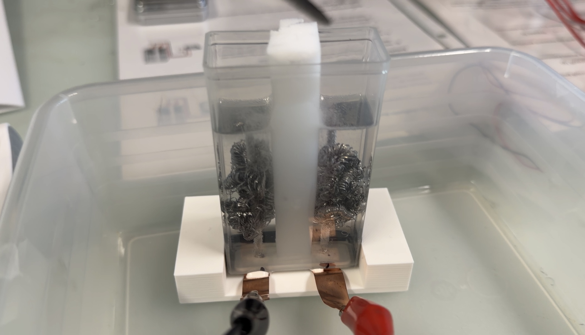
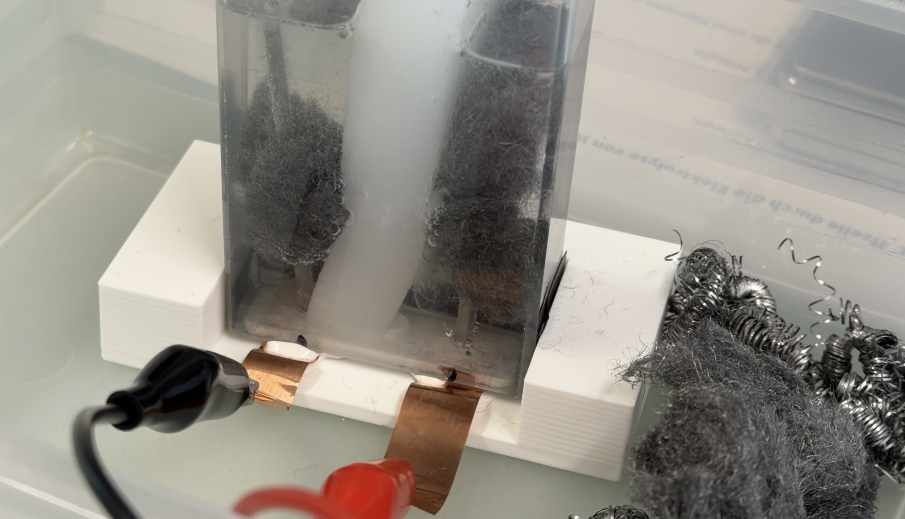
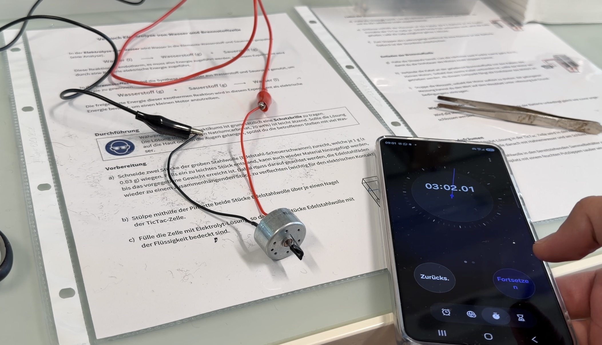
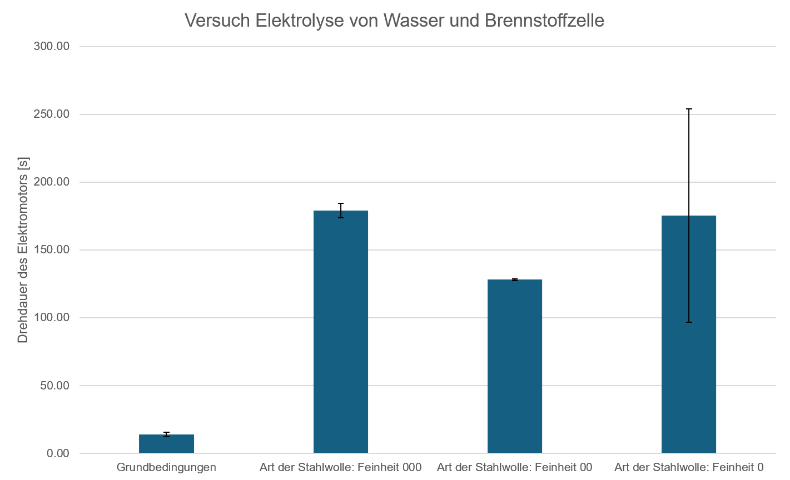

Chemischer Teil
Dokumentation der Daten
Im Experiment «Elektrolyse von Wasser und Brennstoffzelle» wird Wasser mithilfe einer 9-V-Batterie durch Elektrolyse in Wasserstoff und Sauerstoff gespalten. Anschliessend werden die beiden Gase in einer Brennstoffzelle wieder zu Wasser umgesetzt, wobei elektrische Energie entsteht. Diese Energie treibt einen kleinen Motor an. Die Drehdauer des Motors zeigt, wie viel Energie die Brennstoffzelle liefern kann.
Wie hängt die Drehdauer des Elektromotors in einer Wasserstoff-Brennstoffzelle von der Feinheit der Stahlwolle ab?
Veränderte Variable
Die veränderte Variable war bei uns die Feinheit der Stahlwolle. Wir haben diese variiert, um zu untersuchen, welchen Einfluss sie auf die Drehdauer des Elektromotors hat.

Abbildung 1: Veränderung der unabhängigen Variable – niedrige Feinheit der Stahlwolle

Abbildung 2: Veränderung der unabhängigen Variable – hohe Feinheit der Stahlwolle

Abbildung 3: Auswirkung auf die abhängige Variable – Drehdauer des Elektromotors
Beobachtungen
Beim Laden bilden sich Bläschen. Sobald der Motor angeschlossen wird, bauen sich die Bläschen ab. Je nach Art/Feinheit der Stahlwolle bleiben die Bläschen länger oder kürzer (je feiner die Stahlwolle, desto länger bleiben sie bestehen). Bei den letzten Messungen variiert die Drehzahl des Motors, auch nach der konstanten Nivellierung des Elektrolytwassers und der Stahlwolle (Höhe).
Darstellung der Messdaten

Abbildung 4: Darstellung der Messdaten – Versuch Elektrolyse von Wasser und Brennstoffzelle